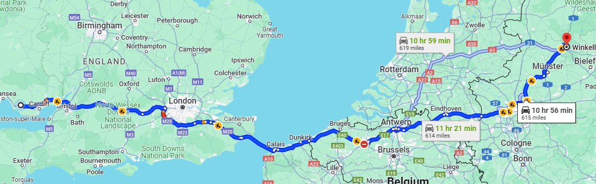
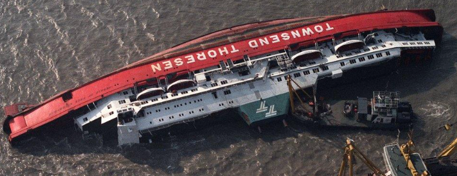
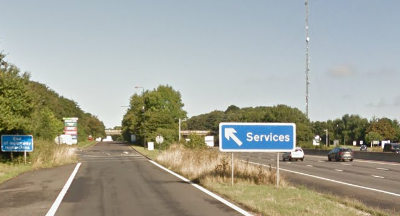

Suzuki GS400E
By 1984 my training was behind me and the Army had posted me to Roberts Barracks in Osnabrück, West Germany. A little further from South Wales than I’d requested.
My first few journeys were on the Boat Train: trains, the Underground, a ferry and eventually a taxi. About a day’s travelling, all told. The full journey is in my Army story. The important bit here is that I soon wanted a different way of getting there.
Time for a Bigger Bike
Eventually I decided I'd had enough of the Boat Train.
The obvious solution was therefore to buy a motorcycle capable of making the entire journey between Germany and South Wales.
Dad and I went back to Two Wheel Services in Bridgend, where he offered his advice on what I should buy next.
I listened to him.
I sometimes wish I hadn't.
I came away with a brand-new red Suzuki GS400.
It even came with a couple of hundred pounds knocked off the price because somebody had managed to put a dent in the fuel tank.

It was still a genuine step up from the SR250: two cylinders, around 44 horsepower and considerably more suitable for serious travelling.
Which was fortunate, because serious travelling was exactly what I was about to ask it to do.
Germany to Wales for the Weekend
I reckon I made the roughly 600-mile journey between Osnabrück and home at least fifteen times while I was stationed in Germany.
About 350 miles from Osnabrück to the Channel ports, then another 250 miles or so from Dover back to South Wales.
And sometimes that was just for a long weekend.
A typical long weekend involved finishing work on Thursday, jumping onto the bike and heading for Calais, Dunkirk or Zeebrugge.
I'd catch whichever ferry fitted the plan, cross to Dover, ride all the way back to Wales, spend three days at home — usually involving rather a lot of drinking — then repeat the whole journey in reverse.
Quite often I'd arrive back at Roberts Barracks early on Monday morning just as everybody else was getting up for a parade or morning run.
Apparently this seemed perfectly sensible when I was nineteen.

Across London and Home
Once back in Britain, I’d head up the A2 from Dover and negotiate my way around London’s South Circular.
Coming from the Welsh valleys, London was an eye-opener. I remember staring in fascination at the sheer variety of people and cultures as I rode through the southern boroughs. My world growing up had been considerably less diverse.
Then it was onto the M4 and west towards home.
As more of the M25 and M2 opened, the journey gradually became quicker, although the infrastructure hadn't entirely caught up.
There weren't enough motorway services along parts of the route and the GS400 couldn't quite make it all the way to Membury Services on one tank.
So I had two choices.
I could detour towards London and call into Heston Services for fuel — and one of the excellent curries they used to serve there — or carry a spare gallon of petrol and keep going until Membury.
I usually carried the petrol.
The Membury Mast
On one particularly freezing journey home, another rider on a GSX1100 kept blasting past me.
Then at the next motorway services I'd see him again, desperately trying to warm himself up.
He'd recover, tear past me once more and the whole process would repeat itself.
Eventually I pulled into Leigh Delamere and found him lying on the ground with his motorcycle on top of him.
Apparently he'd stopped normally but his legs were so cold and stiff that he couldn't straighten them quickly enough to hold the bike upright.
I understood the problem.
On those rides I used to let out an involuntary whoop of excitement whenever the radio mast at Membury finally appeared in the distance.
It meant warmth, fuel and, most importantly, a chance to get off the bike and straighten my legs.

The Fault That Nobody Could Find
The GS400 did have one particularly irritating problem.
Every so often I'd be riding along quite happily when it would suddenly lose power and start spluttering.
I'd limp along for a while and then, just as mysteriously as it had appeared, the problem would disappear.
I tried taking it to a Suzuki workshop in Osnabrück.
Trying to explain an intermittent electrical fault to a German-speaking motorcycle mechanic using only English was never going to be straightforward.
I failed miserably.
So I did what any sensible young motorcyclist would do.
I ignored it and continued riding hundreds of miles across Europe.
Not Every Ride Was Six Hundred Miles
Back home, I also remember “racing” down the Gower with John Whiting on the back, both of us leaning into the bends as though we were competing at the Isle of Man TT.
Whether either knee actually touched the ground is something memory has probably improved over the years.
One Final Journey Home
Eventually my Army career came to an end. I loaded most of my worldly possessions onto the GS400 and headed home.
It’s astonishing how much luggage can be secured to a motorcycle with a couple of bungee cords and enough string.
The Suzuki survived one final long journey back to Wales. I think I kept it for another year or so after leaving, although I can’t remember exactly when it went.
Vince, my roommate and biking friend in Germany, remained one of my closest friends and would later be best man at my wedding. The barrack-room stories belong over on the Army page; the Suzuki had done quite enough work just getting me home and back.
It may not have been my favourite motorcycle, but it was the first one I regularly asked to carry me hundreds of miles across Europe. A bit different from riding the TS100 round the garden.
Eventually I went back to Two Wheel Services and bought something bigger: a Suzuki GS550L.